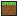

Textures

Textures originales
Dessinées pour BlocNav
Importer un pack (.zip / .jar)
Revenir aux textures originales
Remplace les textures du sol et certaines icônes de lieux (boussole, cœurs, émeraude…) par celles du jeu. Le pack reste uniquement sur ce téléphone : il n'est jamais envoyé sur Internet.
Affichage
Pixelisation de la carte
Forte
Moyenne
Aucune
Taille des blocs
Petits
Moyens
Grands
Guidage vocal
Hors-ligne
Calcul…
Vider le cache de la carte
Installer l'application
À propos
BlocNav